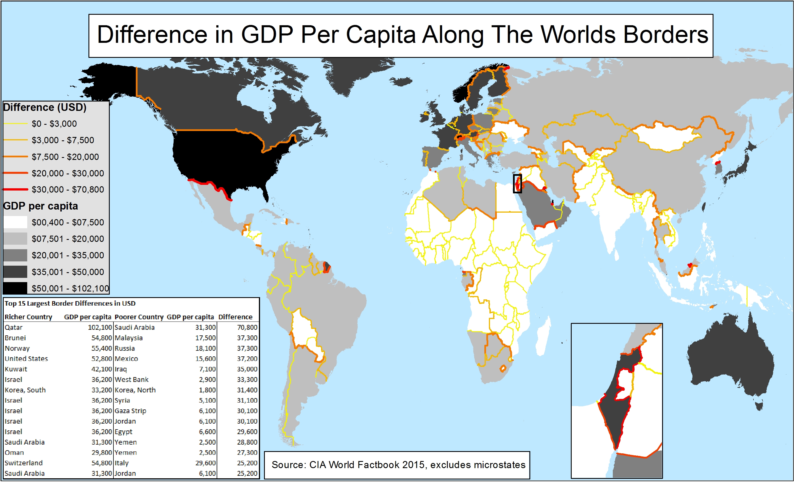
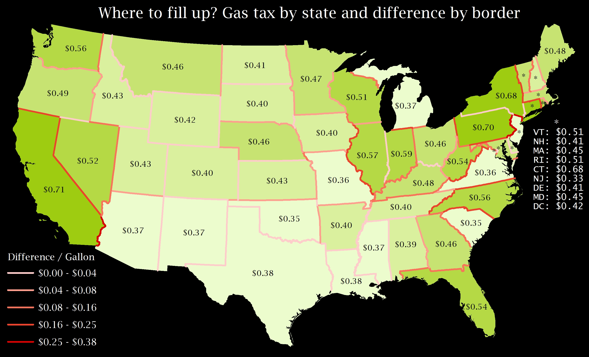
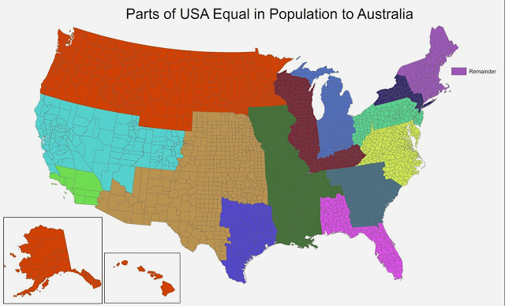
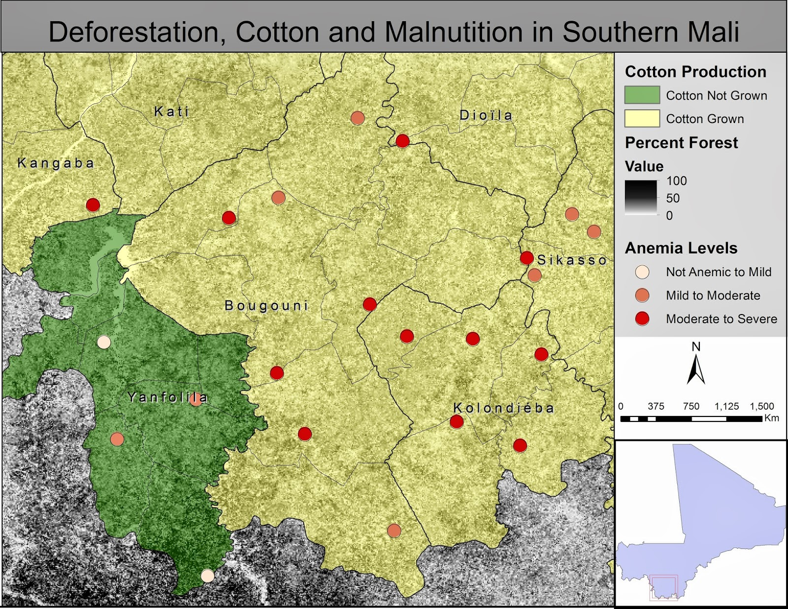
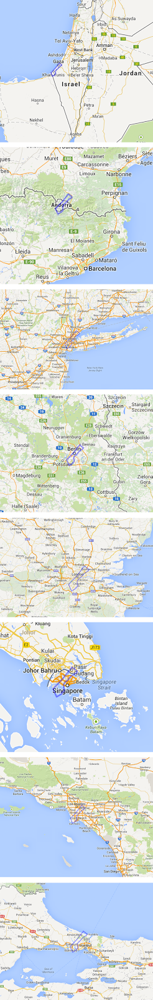

Gallery of Old Maps
Here are a bunch of old maps that I put on reddit, to try and earn as many fake internet points as possible. I think they're all a few years old, from when I was a baby at coding, and mostly just knew GIS/cartography. Here for posterity.

{kind=link}
Where the first world and the third world meet: Here's a map showing difference in GDP per capita along each border. The highest is Qatar - Saudi Arabia, because Qatar is insanely rich. Some other extreme borders included the US - Mexico border, the South Korea - North Korea border, the Kuwait - Iraq border, and the Israel - West Bank border.

{kind=link}
After driving across some mid-atlantic states and seeing gas prices rise and fall as I crossed state borders, I decided to make this map.
Interpretation: you should really fill up in New Jersey. Alternative interpretation: New Jersey is a free rider and all of its neighboring states are bearing a larger burden in fighting climate change.

A pretty interesting map. The title says it all.

{kind=link}
I just wanted to show my Aussie friends how many people live in America!

{kind=link}
I used this map to win a grant to do my MA research in Mali. Anyone looking at this map should be cautioned that the author is trying to subliminally suggest that Yanfolila is more forested, and should read the book "How to Lie with Maps" so that they will no longer be susceptible to such tricks.

I saw some data that needed a map, so I mapped it. I don't really remember why, though.

{kind=link}
Trying to emphasize how tiny Gaza is, and how trapped the people there must feel.